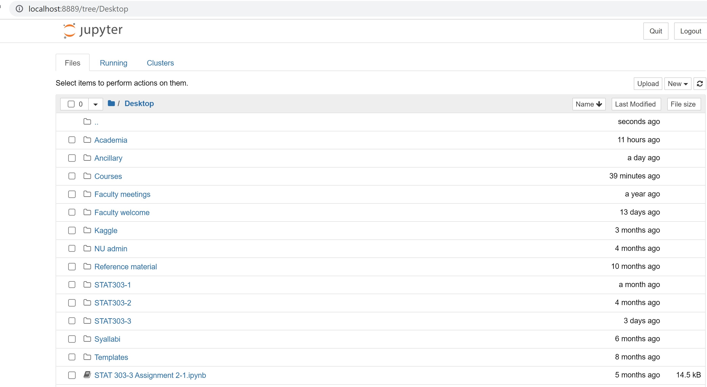
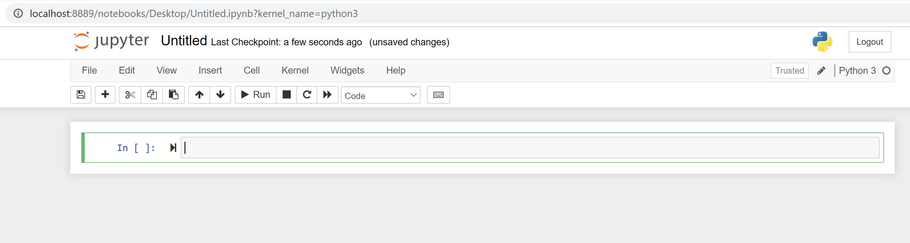
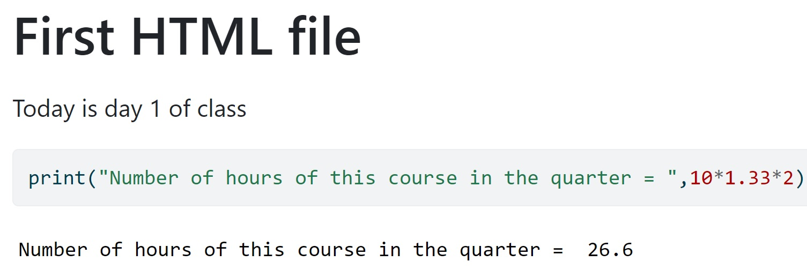
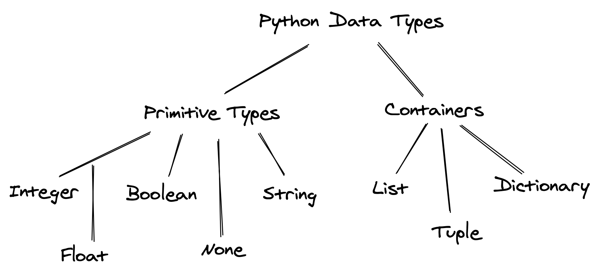

1 Introduction to Python and Jupyter Notebooks
This chapter is a very brief introduction to python and Jupyter notebooks. If you have not taken STAT201 (Introduction to programming for data science), which is now a pre-requisite for the data science major / minor program, please review the python programming section (chapters 1-6) from the STAT201 book. It is assumed that you are already comfortable with this content. Some of the content of these chapters is reviewed briefly in the first two chapters of this book.
1.1 Installation
Anaconda: If you are new to python, we recommend downloading the Anaconda installer and following the instructions for installation. Once installed, we’ll use the Jupyter Notebook interface to write code.
Quarto: We’ll use Quarto to publish the .ipynb file containing text, python code, and the output. Download and install Quarto from here.
1.2 Jupyter notebook
1.2.1 Introduction
Jupyter notebook is an interactive platform, where you can write code and text, and make visualizations. Jupyter is a loose acronym meaning Julia, Python, and R. However, now it supports Ruby, Haskell, Scala, Go, etc, besides Julia, Python, and R. You can access Jupyter notebook from the Anaconda Navigator, or directly open the Jupyter Notebook application itself. It should automatically open up in your default browser. The figure below shows a Jupyter Notebook opened with Google Chrome. This page is called the landing page of the notebook.
To create a new notebook, click on the New button and select the Python 3 option. You should see a blank notebook as in the figure below.

1.2.2 Writing and executing code
Code cell: By default, a cell is of type Code, i.e., for typing code, as seen as the default choice in the dropdown menu below the Widgets tab. Try typing a line of python code (say, 2+3) in an empty code cell and execute it by pressing Shift+Enter. This should execute the code, and create an new code cell. Pressing Ctlr+Enter for Windows (or Cmd+Enter for Mac) will execute the code without creating a new cell.
Commenting code in a code cell: Comments should be made while writing the code to explain the purpose of the code or a brief explanation of the tasks being performed by the code. A comment can be added in a code cell by preceding it with a # sign. For example, see the comment in the code below.
Writing comments will help other users understand your code. It is also useful for the coder to keep track of the tasks being performed by their code.
#This code adds 3 and 5
3+58Markdown cell: Although a comment can be written in a code cell, a code cell cannot be used for writing headings/sub-headings, and is not appropriate for writing lengthy chunks of text. In such cases, change the cell type to Markdown from the dropdown menu below the Widgets tab. Use any markdown cheat sheet found online, for example, this one to format text in the markdown cells.
Give a name to the notebook by clicking on the text, which says ‘Untitled’.
1.2.3 Saving and loading notebooks
Save the notebook by clicking on File, and selecting Save as, or clicking on the Save and Checkpoint icon (below the File tab). Your notebook will be saved as a file with an extension ipynb. This file will contain all the code as well as the outputs, and can be loaded and edited by a Jupyter user. To load an existing Jupyter notebook, navigate to the folder of the notebook on the landing page, and then click on the file to open it.
1.2.4 Rendering notebook as HTML
We’ll use Quarto to print the **.ipynb* file as HTML. Check the procedure for rendering a notebook as HTML here. You have several options to format the file.
You will need to open the command prompt, navigate to the directory containing the file, and use the command: quarto render filename.ipynb --to html.
In-class exercise
- Create a new notebook.
- Save the file as
In_class_exercise1. - Give a heading to the file -
First HTML file. - Print
Today is day 1 of class. - Compute and print the number of hours of this course in the quarter (that will be 10 weeks x 2 classes per week x 1.33 hours per class).
The HTML file should look like the picture below.

1.3 Python language basics
1.3.1 Object Oriented Programming
Python is an object-oriented programming language. In layman terms, it means that every number, string, data structure, function, class, module, etc., exists in the python interpreter as a python object. An object may have attributes and methods associated with it. For example, let us define a variable that stores an integer:
var = 2The variable var is an object that has attributes and methods associated with it. For example a couple of its attributes are real and imag, which store the real and imaginary parts respectively, of the object var:
print("Real part of 'var': ",var.real)
print("Real part of 'var': ",var.imag)Real part of 'var': 2
Real part of 'var': 0Attribute: An attribute is a value associated with an object, defined within the class of the object.
Method: A method is a function associated with an object, defined within the class of the object, and has access to the attributes associated with the object.
For looking at attributes and methods associated with an object, say obj, press tab key after typing obj..
Consider the example below of a class example_class:
class example_class:
class_name = 'My Class'
def my_method(self):
print('Hello World!')
e = example_class()In the above class, class_name is an attribute, while my_method is a method.
1.3.2 Assigning variable name to object
1.3.2.1 Call by reference
Python utilizes a system, which is known as Call by Object Reference. When an object is assigned to a variable name, the variable name serves as a reference to the object. For example, consider the following assignment:
x = [5,3]The variable name x is a reference to the memory location where the object [5, 3] is stored. Now, suppose we assign x to a new variable y:
y = xIn the above statement the variable name y now refers to the same object [5,3]. The object [5,3] does not get copied to a new memory location referred by y. To prove this, let us add an element to y:
y.append(4)
print(y)[5, 3, 4]print(x)[5, 3, 4]When we changed y, note that x also changed to the same object, showing that x and y refer to the same object, instead of referring to different copies of the same object.
1.3.2.2 Assigning multiple variable names
Values can be assigned to multiple variables in a single statement by separating the variable names and values with commas.
color1, color2, color3 = "red", "green", "blue"color1'red'color3'blue'The same value can be assigned to multiple variables by chaining multiple assignment operations within a single statement.
color4 = color5 = color6 = "magenta"1.3.2.3 Rules for variable names
Variable names can be short (a, x, y, etc.) or descriptive ( my_favorite_color, profit_margin, the_3_musketeers, etc.). However, we recommend that you use descriptive variable names as it makes it easier to understand the code.
The rules below must be followed while naming Python variables:
- A variable’s name must start with a letter or the underscore character
_. It cannot begin with a number. - A variable name can only contain lowercase (small) or uppercase (capital) letters, digits, or underscores (
a-z,A-Z,0-9, and_). - Variable names are case-sensitive, i.e.,
a_variable,A_Variable, andA_VARIABLEare all different variables.
Here are some valid variable names:
a_variable = 23
is_today_Saturday = False
my_favorite_car = "Delorean"
the_3_musketeers = ["Athos", "Porthos", "Aramis"] Let’s try creating some variables with invalid names. Python prints a syntax error if the variable’s name is invalid.
Syntax: The syntax of a programming language refers to the rules that govern the structure of a valid instruction or statement. If a statement does not follow these rules, Python stops execution and informs you that there is a syntax error. Syntax can be thought of as the rules of grammar for a programming language.
a variable = 23is_today_$aturday = Falsemy-favorite-car = "Delorean"3_musketeers = ["Athos", "Porthos", "Aramis"]1.3.3 Built-in objects
1.3.3.1 Built-in data types
Variable is created as soon as a value is assigned to it. We don’t have to define the type of variable explicitly as in other programming languages because Python can automatically guess the type of data entered (dynamically typed).
Any data or information stored within a Python variable has a type. We can view the type of data stored within a variable using the type function.
a_variable23type(a_variable)intis_today_SaturdayFalsetype(is_today_Saturday)boolmy_favorite_car'Delorean'type(my_favorite_car)strthe_3_musketeers['Athos', 'Porthos', 'Aramis']type(the_3_musketeers)listPython has several built-in data types for storing different kinds of information in variables.

Primitive: Integer, float, boolean, None, and string are primitive data types because they represent a single value.
Containers: Other data types like list, tuple, and dictionary are often called data structures or containers because they hold multiple pieces of data together. We’ll discuss these datatypes in chapter 2.
The data type of the object can be identified using the in-built python function type(). For example, see the following objects and their types:
type(4)inttype(4.4)floattype('4')strtype(True)bool1.3.3.2 Built-in modules and functions
Built-in functions in Python are a set of predefined functions that are available for use without the need to import any additional libraries or modules. The Python Standard Library is very extensive. Besides built-in functions, it also contains many Python scripts (with the . py extension) containing useful utilities and modules written in Python that provide standardized solutions for many problems that occur in everyday programming.
Below are a couple of examples:
range(): The range() function returns a sequence of evenly-spaced integer values. It is commonly used in for loops to define the sequence of elements over which the iterations are performed.
Below is an example where the range() function is used to create a sequence of whole numbers upto 10:
print(list(range(1,10)))[1, 2, 3, 4, 5, 6, 7, 8, 9]The advantage of the range type over a regular list or tuple is that a range object will always take the same (small) amount of memory, no matter the size of the range it represents (as it only stores the start, stop and step values, calculating individual items and subranges as needed).
Date time: Python as a built-in datetime module for handling date/time objects:
import datetime as dt#Defining a date-time object
dt_object = dt.datetime(2022, 9, 20, 11,30,0)Information about date and time can be accessed with the relevant attribute of the datetime object.
dt_object.day20dt_object.year2022The strftime method of the datetime module formats a datetime object as a string. There are several types of formats for representing date as a string:
dt_object.strftime('%m/%d/%Y')'09/20/2022'dt_object.strftime('%m/%d/%y %H:%M')'09/20/22 11:30'dt_object.strftime('%h-%d-%Y')'Sep-20-2022'1.3.4 Importing libraries
There are several built-in functions in python like print(), abs(), max(), sum() etc., which do not require importing any library. However, these functions will typically be insufficient for a analyzing data. Some of the popular libraries and their primary purposes are as follows:
NumPy: NumPy is a fundamental library for numerical computing in Python. It provides support for arrays, matrices, and mathematical functions, making it essential for scientific and data analysis tasks.. It is mostly used for performing numerical operations and efficiently storing numerical data.
Pandas: Pandas is a powerful data manipulation and analysis library. It offers data structures like DataFrames and Series, which facilitate data reading, cleaning, transformation, and analysis, making it indispensable in data science projects.
Matplotlib, Seaborn: Matplotlib is a comprehensive library for creating static, animated, or interactive plots and visualizations. It is commonly used for data visualization and exploration in data science. Seaborn is a Python data visualization library based on matplotlib. It provides a high-level interface for drawing attractive and informative statistical graphics.
SciPy: SciPy is used for performing scientific computing such as solving differential equations, optimization, statistical tests, etc.
Scikit-learn: Scikit-learn is a machine learning library that provides a wide range of tools for data pre-procesing, classification, regression, clustering, dimensionality reduction, and more. It simplifies the implementation of machine learning algorithms and model evaluation.
Statsmodels: Statsmodels is used for developing statistical models with a focus on inference (in contrast to focus on prediction as in scikit-learn).
To use libraries like NumPy, pandas, Matplotlib, and scikit-learn in Python, you typically need to follow these steps:
Install the libraries (Anaconda already does this)
Import the libraries in the python script or jupyter notebook
Use the Library Functions and Classes: After importing the libraries, you can use their functions, classes, and methods in your code. For instance, you can create NumPy arrays, manipulate data with pandas, create plots with Matplotlib, or train machine learning models with scikit-learn.
A library can be imported using the import keyword. For example, a NumPy library can be imported as:
import numpy as npUsing the as keyboard, the NumPy library has been given the name np. All the functions and attributes of the library can be called using the ‘np.’ prefix. For example, let us generate a sequence of whole numbers upto 10 using the NumPy function arange():
np.arange(8)array([0, 1, 2, 3, 4, 5, 6, 7])There’s different ways to import:
Import the whole module using its original name:
import math, osImport specific things from the module:
from random import randint
from math import piImport the whole library and rename it, usually using a shorter variable name:
import pandas as pdImport a specific method from the module and rename it as it is imported:
from os.path import join as join_path
1.3.5 User-defined functions
A function is a reusable set of instructions that takes one or more inputs, performs some operations, and often returns an output. Indeed, while python’s standard library and ecosystem libraries offer a wealth of pre-defined functions for a wide range of tasks, there are situations where defining your own functions is not just beneficial but necessary. 
1.3.5.1 Creating and using functions
You can define a new function using the def keyword.
def say_hello():
print('Hello there!')
print('How are you?')Note the round brackets or parentheses () and colon : after the function’s name. Both are essential parts of the syntax. The function’s body contains an indented block of statements. The statements inside a function’s body are not executed when the function is defined. To execute the statements, we need to call or invoke the function.
say_hello()Hello there!
How are you?def say_hello_to(name):
print('Hello ', name)
print('How are you?')say_hello_to('Lizhen')Hello Lizhen
How are you?name = input ('Please enter your name: ')
say_hello_to(name)Please enter your name: George
Hello George
How are you?1.3.5.2 Variable scope: Local and global Variables
Local variable: When we declare variables inside a function, these variables will have a local scope (within the function). We cannot access them outside the function. These types of variables are called local variables. For example,
def greet():
message = 'Hello' # local variable
print('Local', message)
greet()Local Helloprint(message) # try to access message variable outside greet() functionNameError: name 'message' is not definedAs message was defined within the function greet(), it is local to the function, and cannot be called outside the function.
Global variable: Aa variable declared outside of the function or in global scope is known as a global variable. This means that a global variable can be accessed inside or outside of the function.
Let’s see an example of how a global variable is created.
message = 'Hello' # declare global variable
def greet():
print('Local', message) # declare local variable
greet()
print('Global', message)Local Hello
Global Hello1.3.5.3 Named arguments
Invoking a function with many arguments can often get confusing and is prone to human errors. Python provides the option of invoking functions with named arguments for better clarity. You can also split function invocation into multiple lines.
def loan_emi(amount, duration, rate, down_payment=0):
loan_amount = amount - down_payment
emi = loan_amount * rate * ((1+rate)**duration) / (((1+rate)**duration)-1)
return emiemi1 = loan_emi(
amount=1260000,
duration=8*12,
rate=0.1/12,
down_payment=3e5
)emi114567.197533892191.3.5.4 Optional Arguments
Functions with optional arguments offer more flexibility in how you can use them. You can call the function with or without the argument, and if there is no argument in the function call, then a default value is used.
emi2 = loan_emi(
amount=1260000,
duration=8*12,
rate=0.1/12)
emi219119.44676323351.3.5.5 *args and **kwargs
We can pass a variable number of arguments to a function using special symbols. There are two special symbols:

Special Symbols Used for passing arguments: 1. *args (Non-Keyword Arguments) 2. *kwargs (Keyword Arguments) > Note: “We use the “wildcard” or “” notation like this – *args OR **kwargs – as our function’s argument when we have doubts about the number of arguments we should pass in a function.”
def myFun(*args,**kwargs):
print("args: ", args)
print("kwargs: ", kwargs)
# Now we can use both *args ,**kwargs
# to pass arguments to this function :
myFun('John',22,'cs',name="John",age=22,major="cs")args: ('John', 22, 'cs')
kwargs: {'name': 'John', 'age': 22, 'major': 'cs'}1.3.6 Branching and looping (control flow)

As in other languages, python has built-in keywords that provide conditional flow of control in the code.
1.3.6.1 Branching with if, else and elif
One of the most powerful features of programming languages is branching: the ability to make decisions and execute a different set of statements based on whether one or more conditions are true.
The if statement
In Python, branching is implemented using the if statement, which is written as follows:
if condition:
statement1
statement2The condition can be a value, variable or expression. If the condition evaluates to True, then the statements within the if block are executed. Notice the four spaces before statement1, statement2, etc. The spaces inform Python that these statements are associated with the if statement above. This technique of structuring code by adding spaces is called indentation.
Indentation: Python relies heavily on indentation (white space before a statement) to define code structure. This makes Python code easy to read and understand. You can run into problems if you don’t use indentation properly. Indent your code by placing the cursor at the start of the line and pressing the
Tabkey once to add 4 spaces. PressingTabagain will indent the code further by 4 more spaces, and pressShift+Tabwill reduce the indentation by 4 spaces.
For example, let’s write some code to check and print a message if a given number is even.
a_number = 34if a_number % 2 == 0:
print("We're inside an if block")
print('The given number {} is even.'.format(a_number))We're inside an if block
The given number 34 is even.The else statement
We may want to print a different message if the number is not even in the above example. This can be done by adding the else statement. It is written as follows:
if condition:
statement1
statement2
else:
statement4
statement5
If condition evaluates to True, the statements in the if block are executed. If it evaluates to False, the statements in the else block are executed.
if a_number % 2 == 0:
print('The given number {} is even.'.format(a_number))
else:
print('The given number {} is odd.'.format(a_number))The given number 34 is even.The elif statement
Python also provides an elif statement (short for “else if”) to chain a series of conditional blocks. The conditions are evaluated one by one. For the first condition that evaluates to True, the block of statements below it is executed. The remaining conditions and statements are not evaluated. So, in an if, elif, elif… chain, at most one block of statements is executed, the one corresponding to the first condition that evaluates to True.
today = 'Wednesday'if today == 'Sunday':
print("Today is the day of the sun.")
elif today == 'Monday':
print("Today is the day of the moon.")
elif today == 'Tuesday':
print("Today is the day of Tyr, the god of war.")
elif today == 'Wednesday':
print("Today is the day of Odin, the supreme diety.")
elif today == 'Thursday':
print("Today is the day of Thor, the god of thunder.")
elif today == 'Friday':
print("Today is the day of Frigga, the goddess of beauty.")
elif today == 'Saturday':
print("Today is the day of Saturn, the god of fun and feasting.")Today is the day of Odin, the supreme diety.In the above example, the first 3 conditions evaluate to False, so none of the first 3 messages are printed. The fourth condition evaluates to True, so the corresponding message is printed. The remaining conditions are skipped. Try changing the value of today above and re-executing the cells to print all the different messages.
Using if, elif, and else together
You can also include an else statement at the end of a chain of if, elif… statements. This code within the else block is evaluated when none of the conditions hold true.
a_number = 49if a_number % 2 == 0:
print('{} is divisible by 2'.format(a_number))
elif a_number % 3 == 0:
print('{} is divisible by 3'.format(a_number))
elif a_number % 5 == 0:
print('{} is divisible by 5'.format(a_number))
else:
print('All checks failed!')
print('{} is not divisible by 2, 3 or 5'.format(a_number))All checks failed!
49 is not divisible by 2, 3 or 5Non-Boolean Conditions
Note that conditions do not necessarily have to be booleans. In fact, a condition can be any value. The value is converted into a boolean automatically using the bool operator. Any value in Python can be converted to a Boolean using the bool function.
Only the following values evaluate to False (they are often called falsy values):
- The value
Falseitself - The integer
0 - The float
0.0 - The empty value
None - The empty text
"" - The empty list
[] - The empty tuple
() - The empty dictionary
{} - The empty set
set() - The empty range
range(0)
Everything else evaluates to True (a value that evaluates to True is often called a truthy value).
if '':
print('The condition evaluted to True')
else:
print('The condition evaluted to False')The condition evaluted to Falseif 'Hello':
print('The condition evaluted to True')
else:
print('The condition evaluted to False')The condition evaluted to Trueif { 'a': 34 }:
print('The condition evaluted to True')
else:
print('The condition evaluted to False')The condition evaluted to Trueif None:
print('The condition evaluted to True')
else:
print('The condition evaluted to False')The condition evaluted to FalseNested conditional statements
The code inside an if block can also include an if statement inside it. This pattern is called nesting and is used to check for another condition after a particular condition holds true.
a_number = 15if a_number % 2 == 0:
print("{} is even".format(a_number))
if a_number % 3 == 0:
print("{} is also divisible by 3".format(a_number))
else:
print("{} is not divisibule by 3".format(a_number))
else:
print("{} is odd".format(a_number))
if a_number % 5 == 0:
print("{} is also divisible by 5".format(a_number))
else:
print("{} is not divisibule by 5".format(a_number))15 is odd
15 is also divisible by 5Notice how the print statements are indented by 8 spaces to indicate that they are part of the inner if/else blocks.
Nested
if,elsestatements are often confusing to read and prone to human error. It’s good to avoid nesting whenever possible, or limit the nesting to 1 or 2 levels.
Shorthand if conditional expression
A frequent use case of the if statement involves testing a condition and setting a variable’s value based on the condition.
Python provides a shorter syntax, which allows writing such conditions in a single line of code. It is known as a conditional expression, sometimes also referred to as a ternary operator. It has the following syntax:
x = true_value if condition else false_valueIt has the same behavior as the following if-else block:
if condition:
x = true_value
else:
x = false_valueLet’s try it out for the example above.
parity = 'even' if a_number % 2 == 0 else 'odd'print('The number {} is {}.'.format(a_number, parity))The number 15 is odd.The pass statement
if statements cannot be empty, there must be at least one statement in every if and elif block. We can use the pass statement to do nothing and avoid getting an error.
a_number = 9if a_number % 2 == 0:
elif a_number % 3 == 0:
print('{} is divisible by 3 but not divisible by 2')IndentationError: expected an indented block (1562158884.py, line 3)As there must be at least one statement withihng the if block, the above code throws an error.
if a_number % 2 == 0:
pass
elif a_number % 3 == 0:
print('{} is divisible by 3 but not divisible by 2'.format(a_number))9 is divisible by 3 but not divisible by 21.3.6.2 Iteration with while loops
Another powerful feature of programming languages, closely related to branching, is running one or more statements multiple times. This feature is often referred to as iteration on looping, and there are two ways to do this in Python: using while loops and for loops.
while loops have the following syntax:
while condition:
statement(s)Statements in the code block under while are executed repeatedly as long as the condition evaluates to True. Generally, one of the statements under while makes some change to a variable that causes the condition to evaluate to False after a certain number of iterations.
Let’s try to calculate the factorial of 100 using a while loop. The factorial of a number n is the product (multiplication) of all the numbers from 1 to n, i.e., 1*2*3*...*(n-2)*(n-1)*n.
result = 1
i = 1
while i <= 10:
result = result * i
i = i+1
print('The factorial of 100 is: {}'.format(result))The factorial of 100 is: 36288001.3.6.3 Infinite Loops
Suppose the condition in a while loop always holds true. In that case, Python repeatedly executes the code within the loop forever, and the execution of the code never completes. This situation is called an infinite loop. It generally indicates that you’ve made a mistake in your code. For example, you may have provided the wrong condition or forgotten to update a variable within the loop, eventually falsifying the condition.
If your code is stuck in an infinite loop during execution, just press the “Stop” button on the toolbar (next to “Run”) or select “Kernel > Interrupt” from the menu bar. This will interrupt the execution of the code. The following two cells both lead to infinite loops and need to be interrupted.
# INFINITE LOOP - INTERRUPT THIS CELL
result = 1
i = 1
while i <= 100:
result = result * i
# forgot to increment i# INFINITE LOOP - INTERRUPT THIS CELL
result = 1
i = 1
while i > 0 : # wrong condition
result *= i
i += 11.3.6.4 break and continue statements
In Python, break and continue statements can alter the flow of a normal loop. 
We can use the break statement within the loop’s body to immediately stop the execution and break out of the loop. with the continue statement. If the condition evaluates to True, then the loop will move to the next iteration.
i = 1
result = 1
while i <= 100:
result *= i
if i == 42:
print('Magic number 42 reached! Stopping execution..')
break
i += 1
print('i:', i)
print('result:', result)Magic number 42 reached! Stopping execution..
i: 42
result: 1405006117752879898543142606244511569936384000000000i = 1
result = 1
while i < 8:
i += 1
if i % 2 == 0:
print('Skipping {}'.format(i))
continue
print('Multiplying with {}'.format(i))
result = result * i
print('i:', i)
print('result:', result)Skipping 2
Multiplying with 3
Skipping 4
Multiplying with 5
Skipping 6
Multiplying with 7
Skipping 8
i: 8
result: 105In the example above, the statement result = result * i inside the loop is skipped when i is even, as indicated by the messages printed during execution.
Logging: The process of adding
Task: Guess the output and explain it.
# Use of break statement inside the loop
for val in "string":
if val == "i":
break
print(val)
print("The end")s
t
r
The end# Program to show the use of continue statement inside loops
for val in "string":
if val == "i":
continue
print(val)
print("The end")s
t
r
n
g
The end1.3.6.5 Iteration with for loops
A for loop is used for iterating or looping over sequences, i.e., lists, tuples, dictionaries, strings, and ranges. For loops have the following syntax:
for value in sequence:
statement(s)The statements within the loop are executed once for each element in sequence. Here’s an example that prints all the element of a list.
days = ['Monday', 'Tuesday', 'Wednesday', 'Thursday', 'Friday']
for day in days:
print(day)Monday
Tuesday
Wednesday
Thursday
Friday# Looping over a string
for char in 'Monday':
print(char)M
o
n
d
a
y# Looping over a dictionary
person = {
'name': 'John Doe',
'sex': 'Male',
'age': 32,
'married': True
}
for key, value in person.items():
print("Key:", key, ",", "Value:", value)Key: name , Value: John Doe
Key: sex , Value: Male
Key: age , Value: 32
Key: married , Value: True1.3.7 Iterating using range and enumerate
The range function is used to create a sequence of numbers that can be iterated over using a for loop. It can be used in 3 ways:
range(n)- Creates a sequence of numbers from0ton-1range(a, b)- Creates a sequence of numbers fromatob-1range(a, b, step)- Creates a sequence of numbers fromatob-1with increments ofstep
Let’s try it out.
for i in range(4):
print(i)0
1
2
3for i in range(3, 8):
print(i)3
4
5
6
7for i in range(3, 14, 4):
print(i)3
7
11Ranges are used for iterating over lists when you need to track the index of elements while iterating.
a_list = ['Monday', 'Tuesday', 'Wednesday', 'Thursday', 'Friday']
for i in range(len(a_list)):
print('The value at position {} is {}.'.format(i, a_list[i]))The value at position 0 is Monday.
The value at position 1 is Tuesday.
The value at position 2 is Wednesday.
The value at position 3 is Thursday.
The value at position 4 is Friday.Another way to achieve the same result is by using the enumerate function with a_list as an input, which returns a tuple containing the index and the corresponding element.
for i, val in enumerate(a_list):
print('The value at position {} is {}.'.format(i, val))The value at position 0 is Monday.
The value at position 1 is Tuesday.
The value at position 2 is Wednesday.
The value at position 3 is Thursday.
The value at position 4 is Friday.